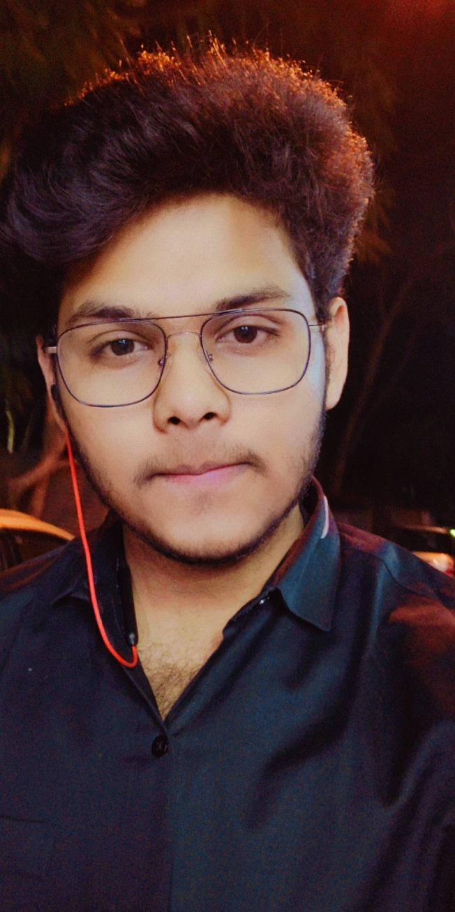

About Me

Currently I am a 20 year old undergrad at VSSUT,Burla pursuing degree of Computer Science and Engineering. I live in a small town from Damanjodi, Koraput which is southern most district of Odisha. I have completed my matriculation from Delhi Public School, Damanjodi and my intermediate from DAV Public School, Pokhariput. I spend my time with my pet Bruno who is Golden Retriever. I am a open hearted person so any one can be a friend of but also I'm committed :P .
My Intersets
- Competitive Programming
- Open Source Contribution
- Aritficial Intelligence and Machine learning
- Cryptocurrency and Cybersecurity
My skills
- Proficient in Data Structures and Algorithms in C++
- Beginner @ Front-end Development
- Coder @ Codechef, Codeforces, Spoj.
- Touch Typing(10 fingers fast typing)
My Hobbies
- Cooking
- Listening Music
- Binge Watching Web Series @ Netflix
- Coding for my improvement